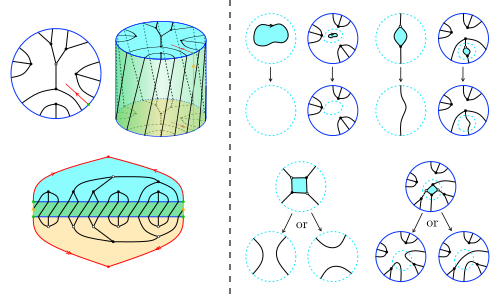

Slide title
Your explanation goes here.
Inline mathematics: $f(x)=g(y)$.
Your name
Your institution
Seminar name · Date
When must a continuous function have a fixed point?
Given a map $f\colon X\to X$, we seek $x\in X$ such that
\[ f(x)=x. \]Definition. A fixed point of a map $f\colon X\to X$ is a point $x\in X$ satisfying $f(x)=x$.
For example, $f\colon\R\to\R$, $f(x)=x^2$, has fixed points $0$ and $1$.
Theorem
Every continuous map $f\colon[0,1]\to[0,1]$ has a fixed point.
The key ingredient is the intermediate value theorem.
Let $g(x)=f(x)-x$. Then $g$ is continuous and
\[ \begin{aligned} g(0)&=f(0)\geq 0,\\ g(1)&=f(1)-1\leq 0. \end{aligned} \]The intermediate value theorem gives a point $c\in[0,1]$ with $g(c)=0$. Hence $f(c)=c$.
$\square$
Your explanation goes here.
Inline mathematics: $f(x)=g(y)$.
Your explanation goes here.
Inline mathematics: $f(x)=g(y)$.

Your name · your.email@example.com